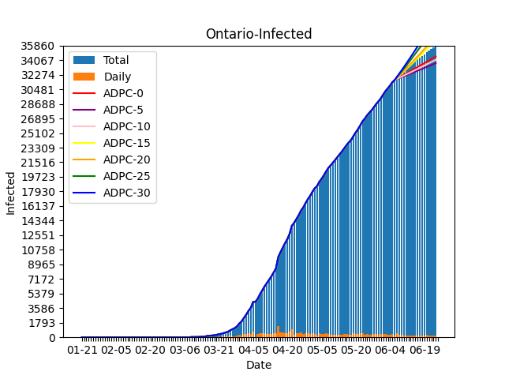
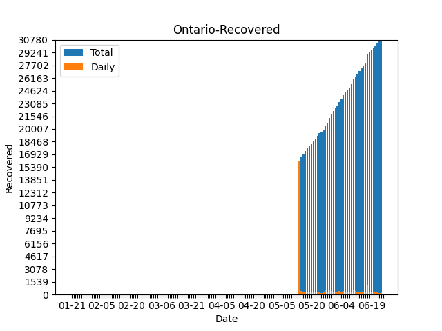
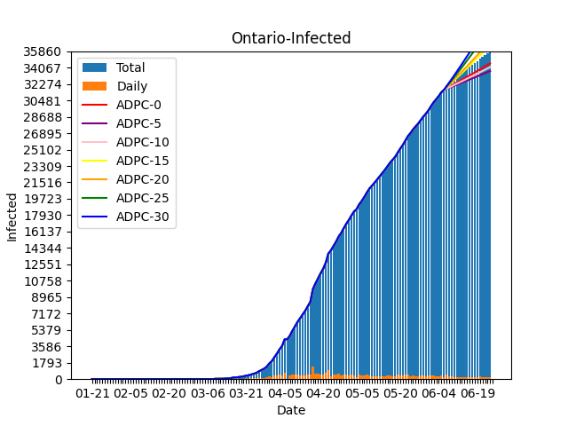
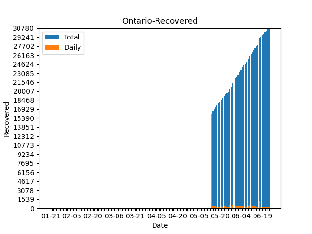
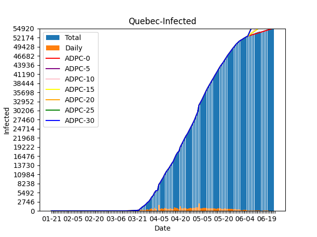
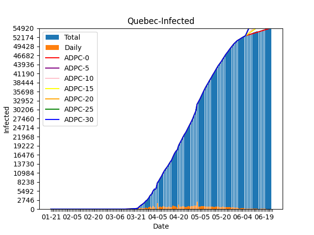
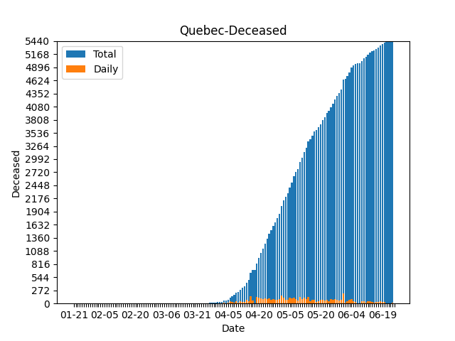
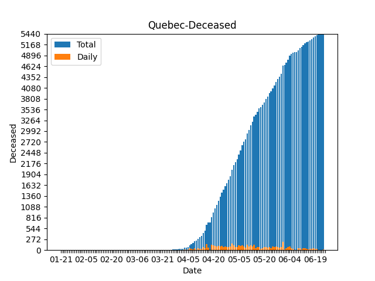

British Columbia
British Columbia-Infected
 ## British Columbia-Recovered
## British Columbia-Recovered  ## British Columbia-Deceased
## British Columbia-Deceased  # Alberta ## Alberta-Infected
# Alberta ## Alberta-Infected  ## Alberta-Recovered
## Alberta-Recovered  ## Alberta-Deceased
## Alberta-Deceased  # Saskatchewan ## Saskatchewan-Infected
# Saskatchewan ## Saskatchewan-Infected  ## Saskatchewan-Recovered
## Saskatchewan-Recovered  ## Saskatchewan-Deceased
## Saskatchewan-Deceased  # Manitoba ## Manitoba-Infected
# Manitoba ## Manitoba-Infected  ## Manitoba-Recovered
## Manitoba-Recovered  ## Manitoba-Deceased
## Manitoba-Deceased  # Ontario ## Ontario-Infected  ## Ontario-Recovered  ## Ontario-Deceased
# Ontario ## Ontario-Infected  ## Ontario-Recovered  ## Ontario-Deceased  # Quebec ## Quebec-Infected  ## Quebec-Recovered
# Quebec ## Quebec-Infected  ## Quebec-Recovered  ## Quebec-Deceased  # New Brunswick ## New Brunswick-Infected
## Quebec-Deceased  # New Brunswick ## New Brunswick-Infected  ## New Brunswick-Recovered
## New Brunswick-Recovered  ## New Brunswick-Deceased
## New Brunswick-Deceased  # Nova Scotia ## Nova Scotia-Infected
# Nova Scotia ## Nova Scotia-Infected  ## Nova Scotia-Recovered
## Nova Scotia-Recovered  ## Nova Scotia-Deceased
## Nova Scotia-Deceased  # Prince Edward Island ## Prince Edward Island-Infected
# Prince Edward Island ## Prince Edward Island-Infected  ## Prince Edward Island-Recovered
## Prince Edward Island-Recovered  ## Prince Edward Island-Deceased
## Prince Edward Island-Deceased  # Newfoundland and Labrador ## Newfoundland and Labrador-Infected
# Newfoundland and Labrador ## Newfoundland and Labrador-Infected  ## Newfoundland and Labrador-Recovered
## Newfoundland and Labrador-Recovered  ## Newfoundland and Labrador-Deceased
## Newfoundland and Labrador-Deceased  # Yukon ## Yukon-Infected
# Yukon ## Yukon-Infected  ## Yukon-Recovered
## Yukon-Recovered  ## Yukon-Deceased
## Yukon-Deceased  # Northwest Territories ## Northwest Territories-Infected
# Northwest Territories ## Northwest Territories-Infected  ## Northwest Territories-Recovered
## Northwest Territories-Recovered  ## Northwest Territories-Deceased
## Northwest Territories-Deceased